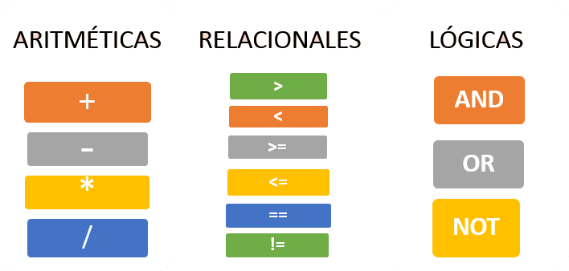

Manual de la asignatura
Introducción a la programación
INP-ES
El alumno implementará programas mediante metodologías y herramientas de programación para visualizar las aplicaciones de tecnologías de la información en la solución de problemas.
Primero
90
6
1
7
Evaluación
Saber

Más

Saber hacer

Más
Ser

Bibliografía
TEMA 1 - Fundamentos de algoritmos
¿Qué es un algoritmo?
Constituye una lista bien definida, ordenada y finita de operaciones, que permite encontrar la solución a un problema determinado. Dado un estado inicial y una entrada, es a través de pasos sucesivos y bien definidos que se llega a un estado final, en el que se obtiene una solución (si hay varias) o la solución (si es única).
Expresar un algoritmo
puede ser expresado como:Análisis y comprensión de un problema
Las etapas de desarrollo de un algoritmo, con base en la lógica, son las siguientes:
- Definición: En esta etapa se especifica el propósito del algoritmo y se ofrece una definición clara del problema por resolver. Además, aquí también se establece lo que se pretende lograr con su solución.
- Análisis: En este punto se analiza el problema y sus características, y se determinan las entradas y salidas del problema. De igual modo, también se realiza una investigación sobre si ya se conoce alguna o varias soluciones de este.
- Diseño: Aquí es donde se plasma la solución del problema. Con ese fin, se emplea una herramienta de diseño, que consiste en el diagrama de flujo y el pseudocódigo.
- Implementación: En este último paso es donde se realiza o se ve concretado el programa y, por ende, se hacen varias pruebas.
TEMA 2 - Tipos de datos y expresiones
Tipo de datos más básicos

Expresiones más utilizadas
TEMA 3 - Metodología para la solución de problemas
- Definir el problema: saber que es el problema y comprenderlo.
- Analizar el problema: idear los pasos a seguir, identificar las entradas, salidas y procesos.
- Diseñar una solución: el análisis plantearlo mediante un algoritmo: diagrama de flujo y pseudocódigo.
- INICIO
- Paso 1. Declarar variables
- Paso 2. Entradas de datos
- Paso 3. Proceso de datos
- Paso 4. Salida de datos
- FIN
- Implementar la solución: El diagrama de flujo representarlo en un lenguaje de programación, realizar pruebas y mejoras al programa.
TEMA 1 - Tipos de aplicaciones

Para su desarrollo es utilizado un lenguaje de programación nativo. Para iOS es Objective C o Siwft, para Android es Java, para Windows Phone es .NET. Las apps no son portables y se deben desarrollar según la plataforma en donde se implementará. Si se desea crear una app nativa multiplataforma, se deberá crear una app para cada plataforma.
Son desarrolladas utilizando tecnologías web como HTML5, CSS3, JavaScript, utilizando Phonegap/Cordova haciendo su modelo neutro con respecto a la plataforma a utilizar.
Son desarrolladas con tecnologías web: HTML, CSS, Javascript, utilizando frameworks. Se alojan en servidores.
TEMA 2 - Entrada y salida de datos
TEMA 3 - Declaración de variables
Las variables representan un espacio de la memoria de la computadora. A travpes de una variable, podemos almacenar temporalmente datos para tenerlos disponibles durante la ejecución del programa. Para utilizar una variable, tenemos que especificar un nombre y un tipo de datos
Nombre de las variables o identificadores válidos
Nombres de variables o identificadores incorrectos